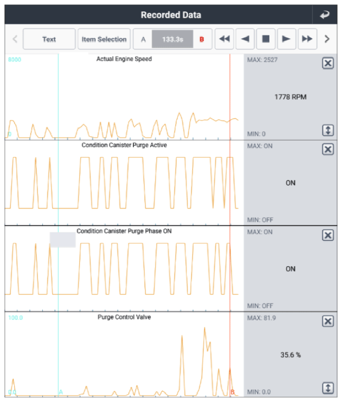

Monitor Canister Purge Valve
WARNING: This page is about a different variant/trim than selected.
- Connect GDS to Data Link Connector (DLC).
- Engine "OFF".
- Monitor current data of "Purge Control Valve" with GDS.
Specification
: Refer to Figure below
 Courtesy of HYUNDAI MOTOR AMERICA
|